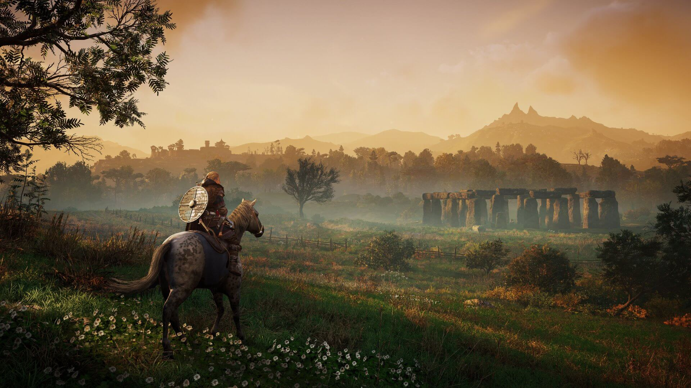
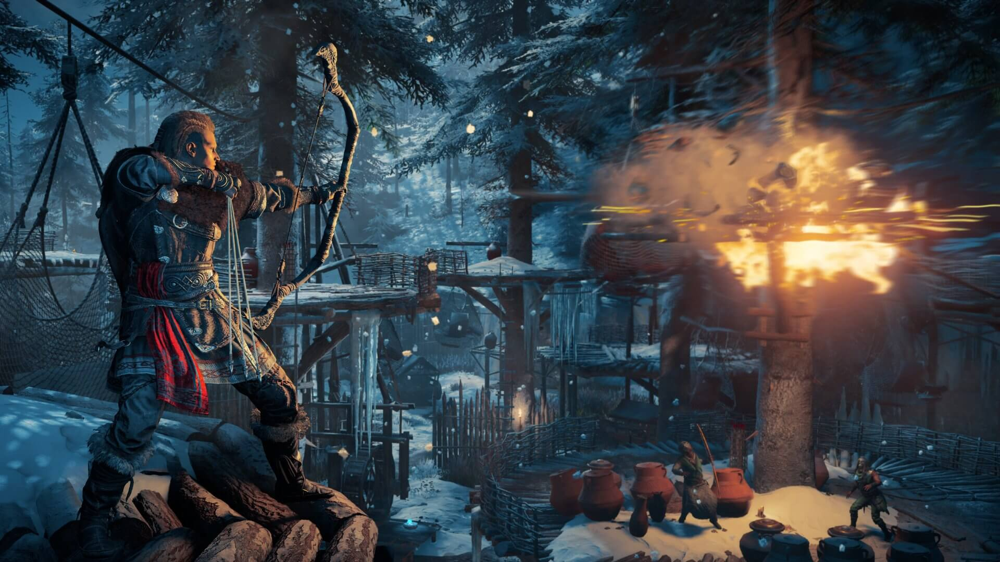

Serinin son oyunu olan Valhalla, seriyi tamamen değiştiren Origins ve Odyssey’in
eksiklerini bulup
düzelterek oyunculara keyifli saatler sunuyor.
İngiltere'nin kırsallarında suikastçi bir Viking olarak yağmalar yaptığımız Valhalla,
güzel bir
hikayeyi, başarılı bir açık dünya ve çeşitlilik dolu aksiyon sistem ile harmanlayarak
adını serinin
güzel oyunları listesine yazdırmayı başarmış gibi gözüküyor.
İngiltere’de yanımıza dostlar çekerek ilerlememizden tutun da klanımız ile birlikte o topraklarda yaptığımız baskınlara kadar bütün öğeleri içinde barındırıyor. Oyunumuz geliştirme yapmanın merak uyandırdığı bir yetenek ağacına sahip. Geliştirdikçe dallanan bir sistem olması onu bir önceki oyunlardaki sistemlere göre öne çıkarmış.
Açık dünya bir oyun olması bir önyargı yaratsa bile uzun zamandır bu kadar dolu içeriklere sahip ve sıkmayan bir açık dünya oyununa denk gelmemiştim. Britanya’nın güzel topraklarında at veya kurt sırtında gezmek muazzam bir his yaratıyor. Bunu yaparken yan görev almaktan önce biraz çekinsek bile yavaş yavaş ne kadar keyif aldığımızı fark ediyoruz. Açık dünya görevleri içleri dolu dolu ve tekrara çok az düşen kesinlikle yapmaktan keyif aldığımız bir hal almaya başlıyor. Açık dünyada yaptığımız lootlar sistemi ise gayet yerinde.Hem sürekli kendinizi geliştirmeniz açısından loot yapmak zorunda olmamak hem de loot yapmanın gerekliliği çok güzel bir şekilde harmanlanmış ve oyunculara sunulmuş. Bunun dışında grafikler konusunda çok iyi bir iş çıkaran oyunumuz açık dünyası ile adeta ellerinizi sürekli fotoğraf moduna götürüyor.
Biz bu devasa açık dünyayı keşfederken, oyunun yavaş temposuna da kendimizi kaptırarak Valhalla'yı en iyi şekilde deneyimlemeyi amaçladık. Bu upuzun yolculukta ise en yakın arkadaşımız Legion 5 oldu. RTX ekran kartının oyun içinde yarattığı etki öylesine derin hissediliyor ki adeta kuzey topraklarında yürüyormuşuz gibi hissettiriyor oyun bize.Performans anlamında ise oyunu Fullscreen 1920x1080 modunda oynarken 100 FPS altına hiç düşmedik diyebiliriz. Gayet yağ gibi aktı tüm oyun. Bununla beraber oyunu her açtığımızda uzun saatler oynamış olmamıza rağmen en ufak bir ısınma problemi veya ısınmadan kaynaklanacak türden bir performans sorunu yaşamadık. Legion 5 Pro efsane soğutma sistemiyle bizi çok sağlam taşıdı bu anlamda da.
Öncelikle Origins ile başlattıkları bu yeni oynanış deneyiminde yapılan üç oyundan en başarılısı olduğunu söyleyebilirim. Önceki oyunlardan daha güzel ve akıcı bir hikayeye sahip olması ve ana karakteri gerçekten severek oynamanız yapılan en güzel işlerden biri. Klanınız ile yaptığınız baskınlar bir önceki oyunda olan meydan savaşlarından daha keyifli ve daha anlamlı geliyor. Oyunda adım başı yeni
Kendinize göre bir oyun stili oluşturmanızı sağlaması bu şekilde uzun süren oyunlar için çok büyük bir avantaj. Eğer çift elle tutulan kılıcı seversen sadece onu geliştirerek de oyunu oynayabiliyorsun. Oyuna gelen DLC’lerin oyuna getirdiği yeniliklerde azımsanmayacak seviyede. DLC’ler için gerçekten sadece nicelikten oluşmadığını ayrıca nitelik de barındırdığını söyleyebiliriz. Özellikle gelen yeni savaş silahları ile birlikte eğlenceli aksiyonlara girebiliyorsun.